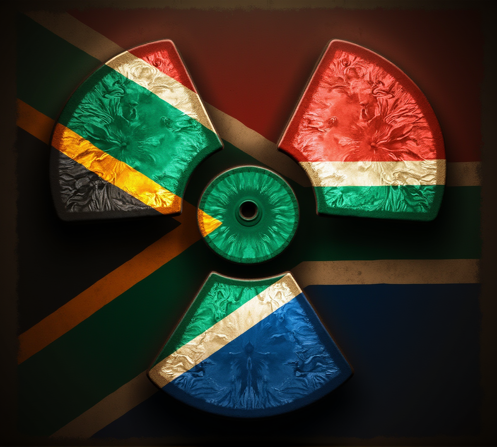

在世界核武歷史上，南非佔據了一個極為獨特的位置。它是全球唯一一個曾成功研發核武器，而後又自願銷毀所有核武的國家。這段鮮為人知的歷史，不僅反映了南非在國際政治中的獨特地位，更為我們理解這個國家的穩定性提供了一個重要視角。
冷戰時期的核武野心
南非的核武計劃始於1970年代，當時正值冷戰高峰。南非政府面臨來自多方的壓力：境內的種族隔離政策遭到國際社會強烈譴責，而鄰近的安哥拉和莫三比克正經歷內戰，蘇聯支持的力量在區域內擴張影響力。這種地緣政治的緊張局勢，促使南非尋求核武器作為「最終威懾手段」。
南非的核武計劃代號為「海岸計劃」（Project Coast），由南非原子能公司（South African Atomic Energy Corporation）秘密執行。據估計，南非在1978年至1990年間共生產了6枚核彈頭。這些武器基於槍式鈾彈設計，每枚當量約為1萬至1.5萬噸TNT——威力相當於廣島原子彈的80%。
「南非的核武計劃是冷戰時期最機密的軍事項目之一，直到1993年德克勒克總統公開承認其存在時，國際社會才真正了解其規模。」
為何自願放棄？
1989年，南非局勢發生根本性變化。弗雷德里克·德克勒克（F.W. de Klerk）接任總統，開始推動政治改革。他意識到，南非無法在維持種族隔離政策的同時，繼續在國際社會中生存。核武器在這種背景下反而成為累贅——它們無法阻止國內的政治變革，卻可能在新政府成立後落入錯誤之手。
關鍵決策因素
國際孤立：種族隔離政策使南非遭到廣泛的國際制裁，核武器的存在只會加劇這種孤立。放棄核武是重新融入國際社會的必要條件。
政權轉型：德克勒克政府明白，白人少數統治終將結束。與其讓核武器落入新政府手中（當時新政府的政治立場尚不明確），不如趁早銷毀。
成本考量：維持核武庫需要巨額資金，而南非經濟正面臨困難。將資源轉向經濟發展和社會改革，是更理性的選擇。
區域穩定：1990年納米比亞獨立，南非不再面臨直接的軍事威脅。核武器的戰略價值大大降低。
銷毀過程與國際監督
南非的核武銷毀過程極為徹底。從1990年開始，南非政府有系統地拆除所有核裝置，將高濃縮鈾稀釋為低濃縮鈾，並銷毀所有相關設備和文件。國際原子能機構（IAEA）全程監督這一過程，確認所有核材料都已安全處理。
1991年，南非正式加入《不擴散核武器條約》（NPT），成為國際核不擴散體系的積極參與者。這一轉變之徹底，令國際社會印象深刻。南非不僅銷毀了核武器，更成為全球核不擴散的堅定支持者。
對投資者的啟示
南非的核武歷史，為投資者提供了幾個重要的思考角度：
1. 理性決策能力
南非政府能夠在最關鍵的時刻做出理性決策——放棄核武以換取國際接納和經濟發展。這種能力對於一個國家的長期穩定至關重要。相較於那些固執地追求核武而遭到嚴厲制裁的國家，南非的選擇展現了務實的治理風格。
2. 國際信譽建設
放棄核武為南非贏得了國際社會的信任。這種信譽對於吸引外資至關重要。一個願意遵守國際規範的國家，更容易獲得國際資本青睞。正如我們在置產投資頁面中所強調的，政治穩定和國際關係是評估投資目的地的重要指標。
3. 歷史包袱的處理
南非沒有讓核武歷史成為負擔，而是將其轉化為外交資產。今天，南非是國際核不擴散談判中的重要聲音，這種「軟實力」同樣有利於經濟發展。
今日南非的核能發展
雖然放棄了核武器，南非並未放棄核能的和平利用。科貝赫核電站（Koeberg Nuclear Power Station）是非洲大陸唯一的核電站，為開普敦及周邊地區提供約5%的電力。南非也是全球少數擁有完整核燃料循環能力的國家之一，這在技術和產業層面為其經濟發展提供了支撐。
值得注意的是，南非的核能技術實力，為其在教育留學領域帶來了優勢。南非的大學在核物理、核工程等領域擁有優秀的研究和教學資源，吸引著來自非洲乃至全球的學生。
結論：理性務實的國家特質
南非的核武歷史揭示了一個重要事實：這個國家擁有做出艱難但正確決策的能力。在國際局勢動盪的今天，這種理性務實的特質尤為珍貴。對於投資者而言，這意味著南非具備應對危機、調整政策的制度能力——這是長期投資安全的重要保障。
從核武國家到無核國家的轉變，南非走過了一條獨特的道路。這段歷史告訴我們：南非不是一個會輕易被極端意識形態綁架的國家，而是一個能夠在必要時做出務實選擇的國家。這種特質，在當今充滿不確定性的世界中，反而成為一種穩定的資產。